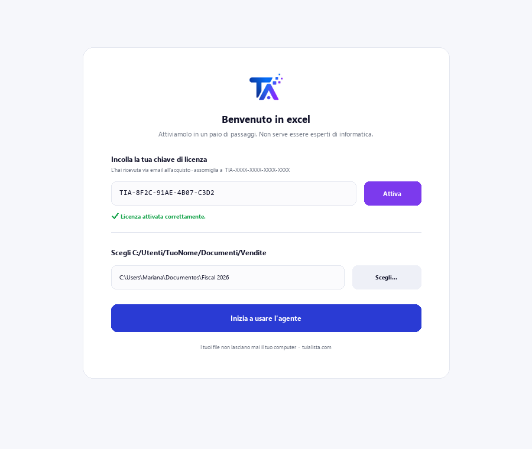
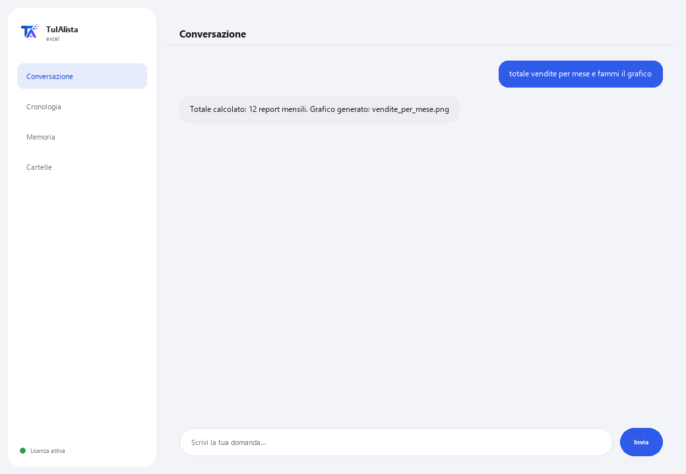

Agente Excel e dati
Chiedigli quello che vuoi nella tua lingua e lo FA davvero: totali, incroci, tabelle pivot, grafici e report — senza scrivere una sola formula.
Cosa risolve e cosa ti serve?
Non è una chat che si limita a commentare i tuoi dati: è un analista che esegue davvero l'operazione (in un sandbox locale sicuro, isolato dal tuo sistema) e ti consegna il risultato — tabella a schermo e file Excel o grafico pronti da aprire.
- Ti serve: la tua chiave di licenza (TIA-XXXX-XXXX-XXXX-XXXX) e la cartella con i tuoi fogli Excel (.xlsx) o CSV. Niente Python né formule.
- Primo risultato in meno di 5 minuti: installi, attivi, scegli la tua cartella e gli chiedi “totale vendite per mese e fammi il grafico”.
- I tuoi dati non lasciano mai il tuo computer — all'IA arriva solo la struttura (colonne), mai i dati, e le ricette più comuni non usano nemmeno l'IA.
soporte@tuialista.com o visita tuialista.com/soporte — di solito rispondiamo lo stesso giorno lavorativo.1 Cosa fa questo agente
Lo punti verso i tuoi fogli e gli chiedi qualsiasi cosa nella tua lingua:
- “calcola il totale per regione e fammi il grafico”
- “crea un foglio con queste colonne e collegalo all'altro file”
- “report esecutivo con formattazione, tabella pivot e grafico incorporato”
L'agente capisce, costruisce l'operazione e la esegue davvero in un sandbox locale sicuro — non si limita a descrivere cosa farebbe. Inoltre:
- Ha ricette automatiche (regole fisse già collaudate, senza IA, che non sbagliano mai) per le operazioni più comuni: riconciliare 2 file, consolidare, crediti per scadenza, scorte sotto il minimo, recuperare dati da un'altra tabella (come un CERCA.VERT/VLOOKUP ma senza formule), tabelle pivot, flusso di cassa, IVA, e altro ancora.
- Ricorda tra una domanda e l'altra: puoi dirgli “aggiungi questo al file precedente” o “salvalo nei miei documenti”.
- Può registrare le tue routine a più passaggi e ripeterle su richiesta.
- Ha una modalità live: se hai già Excel aperto, può leggere e scrivere celle direttamente lì (con la tua conferma prima di scrivere qualsiasi cosa).
2 Installazione (2 minuti)
Per Windows. Non serve internet permanente né caricare nulla sul cloud.
Scarica l'installer da tuialista.com/descargar (agente Excel) e aprilo. Crea un collegamento sul desktop con il logo — non richiede Python né terminale.
Doppio clic sulla nuova icona. Incolla la tua chiave di licenza (ricevuta via email all'acquisto) e premi Attiva. Vedrai un segno di spunta verde quando è valida.
Seleziona la cartella con i tuoi fogli Excel (.xlsx) o CSV e premi Inizia a usare l'agente. La prossima volta si avvia direttamente — ricorda la tua chiave e la tua cartella.

3 Come usarlo
L'agente apre una finestra di chat, come un'app di messaggistica — non è uno schermo nero da programmatore. Nessun comando da memorizzare: gli chiedi quello che serve come lo chiederesti a un analista, premi Invia (o Invio), e lui lo fa:

Cosa fa SENZA bisogno di IA (modalità sicura, attivata di default)
- Riconciliare 2 file / rilevare mancanze
- Consolidare più file in uno · rimuovere duplicati · pulire
- Crediti per scadenza (30/60/90)
- Scorte: sotto il minimo · valorizzare · scorte morte
- Incrociare e recuperare dati (CERCA.VERT) · tabelle pivot · top-N · totali per X
- Confrontare prezzi/versioni · preventivo più economico · rilevare anomalie
- Flusso di cassa · budget vs reale · IVA · ore di timbratura
Vuoi vedere le 20 ricette complete con un esempio reale per ciascuna? Consulta il Catalogo delle ricette — un documento separato data la sua lunghezza: catalogo_recetas.pdf insieme a questo manuale, o la versione interattiva su tuialista.com/guia/excel/recetas.
Memoria e routine
Puoi dirgli “salva questo come il mio report settimanale” per ripetere un'operazione in seguito con “esegui il mio report settimanale”, o “riprendi da ieri” per continuare da dove eri rimasto — anche in un'altra sessione.
Modalità live (Excel aperto)
Se hai già il file aperto in Excel, puoi chiedergli cose dirette sulle celle (“quanto somma B2:B40?”, “metti in D5 il totale”). Le letture rispondono all'istante; le scritture ti mostrano un'anteprima e aspettano il tuo “sì” prima di toccare il file.
4 Esempi di uso comune
Ottenere un totale senza formule
“qual è stato il totale delle vendite di marzo?”
Confrontare periodi o categorie
“confronta le vendite di gennaio con febbraio per regione” — risponde con una tabella comparativa.
Riconciliare due file
“riconcilia il file della banca con quello della contabilità e dimmi cosa manca” — ricetta automatica, senza IA.
Un report completo
“report esecutivo con formattazione, tabella pivot e grafico incorporato” — ti consegna il file Excel pronto.
5 Domande frequenti
I miei dati vengono caricati su internet?
Quali formati accetta?
Esegue davvero l'operazione o si limita a descriverla?
Cosa succede se gli chiedo qualcosa fuori dalle ricette collaudate?
La modalità live può danneggiare il mio Excel aperto?
In quale lingua mi risponde?
Può leggere più file contemporaneamente?
Posso cambiare la cartella dei dati?
Modifica i miei file originali?
Cosa sono le “routine”?
6 Risoluzione dei problemi
Non carica un file Excel
Mostra “0 fogli caricati”
Mostra “Licenza non valida” o chiede di riconnettersi
Indica che quel compito non è in modalità sicura
La modalità live non risponde
Nessuna di queste soluzioni ha risolto il tuo problema? Scrivici direttamente — saremo felici di rivederlo con te.
soporte@tuialista.com o visita tuialista.com/soporte — di solito rispondiamo lo stesso giorno lavorativo.7 Privacy e riservatezza
I tuoi dati non lasciano mai il tuo computer.
- Le ricette automatiche (riconciliare, consolidare, crediti, scorte, recuperare dati da un'altra tabella, tabelle pivot, flusso di cassa...) girano al 100% in locale, senza IA.
- Per le nuove attività con IA (modalità esperto), all'IA viene inviata solo la struttura (nomi delle colonne), mai i tuoi dati.
- L'unica cosa che viaggia su internet è: (1) una verifica che la tua licenza sia attiva, e (2) la struttura dei tuoi fogli quando serve l'IA per una nuova attività.